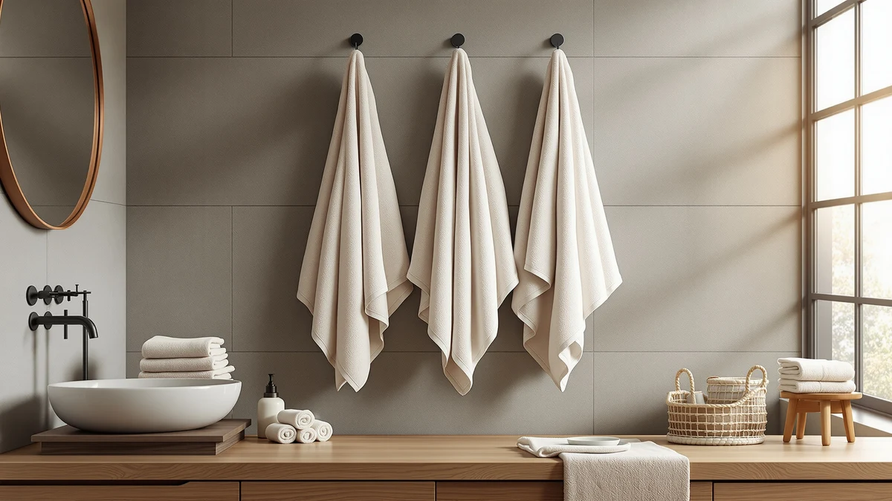

The Best Turkish Bath Towels (2026)
Prices and picks verified as of August 2026. Independent, reader-supported reviews.


Quick Answer
The best Turkish bath towels use a lighter cotton weave that dries faster than a heavy terry towel without giving up absorbency. Our top pick, the Utopia Towels 6 Pack Medium, delivers 100% cotton in a family-ready six-pack for $26.59, and six more options below cover bigger bath sheets, a budget bundle, and hooded towels for kids.
Our pick: Utopia Towels 6 Pack Medium, $26.59 Check Price on Amazon
Bottom line: our top pick is the Utopia Towels 6 Pack Medium Bath Towel Set at $26.59. The best budget option is the 6 PCS Toddler Towels Set for Boy Girl 0-5 Year at $20.68.
Things to Know Before You Buy
- Weight decides dry time. Turkish bath towels use a lighter, flatter weave than plush terry towels, which is why they dry between uses instead of sitting damp on the hook.
- 100% cotton outperforms blends here. Cotton-blend towels like the FUBANRAY and CandyHome sets below feel soft out of the pack but hold moisture longer than the 100% cotton options.
- Pack size changes your price per towel. A six-pack like the Utopia sets works out cheaper per towel than a smaller bundle, but check the individual towel size before assuming more pieces means better value.
- Hooded towels serve a different job than adult towels. If you are shopping for a toddler, the hooded picks in this guide fit that need better than a standard rectangular bath towel.
- A 4-star average is the norm here, not a red flag. Every towel in this lineup sits around a 4-star rating on Amazon, so the real differences show up in size, weave, and price rather than in rating alone.
The best Turkish bath towels trade bulk for a lighter, flatter weave that dries out on the hook instead of staying damp until your next shower. That thinner weave still has to hold water, and that's where a lot of budget towels fall short: they dry fast but skimp on absorbency. We compared seven cotton and cotton-blend sets currently sold on Amazon to see which ones actually deliver both.
Our top pick is the Utopia Towels 6 Pack Medium. At $26.59 for six 100% cotton towels, it gives a household enough coverage for a full rotation without the per-towel cost of buying bath sheets one at a time. If you want a larger towel with more surface area, the Utopia Towels 6 Pack Bath uses the same cotton construction at a bigger 27 by 54 inch size, and it is our runner-up for exactly that reason.
Below, you will also find a full-cotton option from American Veteran Towel, a budget-friendly eight-piece set from White Classic, and three hooded towels built for toddlers rather than adults. Every material, size, and price claim below comes directly from the product listings, and every drawback comes from patterns we found in verified owner reviews, since we work from research and specs rather than a physical test lab.
Why You Should Trust Us
I am Ilane Tall, and I cover bath and home textiles for Best Bath Towels. Turkish-style towels get requested often by readers who tried a thin, fast-drying towel at a hotel or spa and wanted the same feel at home, so getting the weight and weave details right matters more here than in a typical roundup.
This guide is research-based. We compare listed materials, prices, and verified buyer feedback instead of running our own product lab, and we do not fabricate ratings or scores. Every material, size, and price claim in this article comes from the product listings themselves, and every drawback comes from patterns we found in verified owner reviews.
How We Picked
We started with the cotton and cotton-blend towels sold on Amazon under the best Turkish bath towels and related searches, then narrowed the field to seven sets that cover a range of sizes, prices, and use cases, from full-size adult towels to hooded towels for kids. We prioritized listings with a clearly stated material, either 100% cotton or a named cotton blend, over vague marketing language.
We also weighted pack composition. A six-pack of medium towels is not the same purchase as an eight-piece set that mixes towel sizes, so we noted exactly what each listing includes and how that changes the effective price per towel. For a deeper breakdown of fabric weight and weave beyond this list, our bath towel buying guide covers GSM and material choices in more detail.
How We Compared
For each set, we compared the material listed by the manufacturer against the price and pack size, and we flagged any listing where a lower price came with a noticeably thinner or lower-grade fabric than the rest of this lineup. 100% cotton towels command a price premium over cotton blends, and we checked whether that premium bought anything meaningful in size or pack count for shoppers specifically searching for Turkish bath towels.
We also read through verified buyer reviews for each product, looking for repeated mentions of thinning, shrinkage, or seams coming apart after washing, since those are the failure points that matter most for a towel meant to be washed weekly. Prices and specifications reflect the Amazon listings as of August 2026 and are subject to change.
Our Picks

Utopia Towels 6 Pack Medium
What we like
- 100% cotton construction
- Six towels cover a full household rotation
- 22 x 44 inch size fits a standard towel bar
- Lowest price per towel in this lineup
Flaws but not dealbreakers
- Smaller than the oversized bath sheets below
- Lighter weave feels less plush than a heavy terry towel
| Material | 100% cotton |
| Size | 22" x 44" - 6 Pack |
The Utopia Towels 6 Pack Medium is our top pick because it solves the basic math problem of stocking a bathroom: six 100% cotton towels for $26.59 works out to under $4.50 per towel, cheaper than buying two or three towels individually elsewhere in this guide. At 22 by 44 inches, each towel is sized for drying off rather than wrapping around like a bath sheet, which also means it dries faster on the hook between uses.
The trade-off for that lighter weave is plushness. If you want a bigger, heavier towel with more surface area, the Utopia Towels 6 Pack Bath below uses the same cotton construction at a larger 27 by 54 inch size. But for a household that needs enough clean towels in rotation without paying for bulk, this six-pack is the most efficient way to get there.

Utopia Towels 6 Pack Bath
What we like
- 100% cotton construction
- Larger 27 x 54 inch size than the Medium pack
- Six towels per set
- Same brand and fabric as our top pick, scaled up
Flaws but not dealbreakers
- Costs $18 more than the Medium six-pack
- Larger towels take longer to dry than the Medium size
| Material | 100% cotton |
| Size | 27" x 54" - 6 Pack |
The Utopia Towels 6 Pack Bath is our runner-up because it keeps everything that makes the Medium pack work, 100% cotton, six towels per set, from the same manufacturer, while sizing up to 27 by 54 inches. That extra coverage matters if you prefer wrapping a towel fully around your body rather than drying off with a smaller towel.
At $44.99, it costs more per towel than the Medium pack, and a larger towel naturally holds more water and takes longer to dry between uses, which works against the quick-dry appeal that draws people to Turkish-style towels in the first place. If drying speed matters more to you than size, stick with the Medium six-pack above.

American Veteran Towel 100% Cotton
What we like
- 100% cotton construction
- 27 x 54 inch size matches standard bath sheet dimensions
- 4-star average rating on Amazon
Flaws but not dealbreakers
- Priced close to the larger Utopia six-pack without more towels included
- Fewer verified reviews than the Utopia sets
| Material | 100% cotton |
| Size | 27x54 |
The American Veteran Towel is a 100% cotton option sized at 27 by 54 inches, the same footprint as the Utopia 6 Pack Bath, at a similar $39.99 price point. It carries a 4-star average from Amazon shoppers, in line with the rest of this lineup, and it is worth considering if you would rather buy from a different brand than Utopia for variety in your linen closet.
The catch is value. At this price, the Utopia 6 Pack Bath gets you six towels of the same size and material for about $5 more, which makes the per-towel math harder to justify unless you specifically want to spread your purchase across brands rather than stock up on one six-pack.

White Classic Luxury Bath Towel
What we like
- 100% cotton construction
- 8 pieces per set for a lower cost per towel
- 4-star average rating on Amazon
Flaws but not dealbreakers
- Individual towel size runs smaller than the Utopia and American Veteran picks
- 8-piece sets typically mix towel sizes rather than all being full bath towels
| Material | 100% cotton |
| Size | 8 Pieces Towel Set |
The White Classic Luxury Bath Towel earns the budget pick spot because it spreads $39.99 across 8 pieces instead of a single towel or a six-pack, which brings the effective cost per piece below every other 100% cotton option in this guide. For a household that needs to restock hand towels and washcloths alongside bath towels, buying one bundled set is simpler than three separate purchases.
Because the set mixes piece sizes rather than delivering eight identical bath towels, it is not a direct swap for the Utopia or American Veteran picks if you specifically need full-size towels for every family member. Check the listing's size breakdown before ordering if bath towel count, not total piece count, is what you are optimizing for.

FUBANRAY Toddler Bath Towel Hooded
What we like
- Hooded design built for young kids
- Lightweight cotton-blend fabric dries quickly
- 50 x 32 inch size wraps a toddler fully
- 4-star average rating on Amazon
Flaws but not dealbreakers
- Cotton blend rather than 100% cotton
- Not sized for adults or older kids
| Material | Cotton blend |
| Size | 50x32 Inch |
The FUBANRAY Toddler Bath Towel Hooded shifts the format entirely. Instead of a flat rectangular towel, it is built with a hood and a wrap shape sized at 50 by 32 inches for young kids, at $25.99. The cotton-blend fabric is lighter than the 100% cotton picks above, which keeps it quick-drying, the same quality that makes Turkish-style towels appealing for adults.
It will not replace a full-size bath towel for anyone past toddler age, and the cotton blend means it is not as absorbent as the 100% cotton options in this guide. But for bath time with a young child, the hood and wrap shape do a job a flat adult towel cannot, and reviewers consistently note that it stays soft after repeated washes.

Toddler Bath Towel Hooded Kids
What we like
- Hooded design for kids
- Same 50 x 32 inch size as the FUBANRAY pick
- 4-star average rating on Amazon
Flaws but not dealbreakers
- Priced about $2 higher than the FUBANRAY hooded towel above
- Cotton blend rather than 100% cotton
| Material | Cotton blend |
| Size | 50x32 Inch |
The Toddler Bath Towel Hooded Kids covers the same 50 by 32 inch hooded format as the FUBANRAY pick above, at $27.99. If the print or color of the first hooded option does not fit your bathroom, this is a straightforward alternative with the same core construction and a matching 4-star average rating.
There is no functional upgrade here over the cheaper hooded pick, so treat this as a style choice rather than a performance one. Pick whichever print your kid will actually wear out of the bath without a fight.

6 PCS Toddler Towels Set
What we like
- 6 towels per set at $20.68, the lowest total price in this guide
- 27.5 x 55 inch size
- 4-star average rating on Amazon
Flaws but not dealbreakers
- Cotton blend rather than 100% cotton
- Individual towel quality is harder to judge across a 6-piece bundle at this price
| Material | Cotton blend |
| Size | 27.5 x 55in |
The 6 PCS Toddler Towels Set from CandyHome is the value play for a household with more than one young kid. Six towels sized at 27.5 by 55 inches for $20.68 works out to under $3.50 per towel, the lowest per-piece price anywhere in this guide, well below even the Utopia Medium six-pack.
That price reflects the cotton-blend fabric rather than 100% cotton, and a bundle at this price point is worth checking against verified reviews for consistency across all six pieces before assuming every towel in the set matches the listing photos. For most families stocking multiple kids' towels at once, though, it is hard to beat the per-towel cost.
Quick Comparison
| Product | Material | Price | Rating | Best for | Get it |
|---|---|---|---|---|---|
| Utopia Towels 6 Pack Medium | 100% cotton | $26.59 | 4 | Full household rotation on a budget | View on Amazon → |
| Utopia Towels 6 Pack Bath | 100% cotton | $44.99 | 4 | Bigger Turkish-style towel, same brand | View on Amazon → |
| American Veteran Towel 100% Cotton | 100% cotton | $39.99 | 4 | Single-brand cotton alternative | View on Amazon → |
| White Classic Luxury Bath Towel | 100% cotton | $39.99 | 4 | Lowest cost per piece, 8-piece set | View on Amazon → |
| FUBANRAY Toddler Bath Towel Hooded | Cotton blend | $25.99 | 4 | Hooded towel for toddlers | View on Amazon → |
| Toddler Bath Towel Hooded Kids | Cotton blend | $27.99 | 4 | Alternate hooded print for kids | View on Amazon → |
| 6 PCS Toddler Towels Set | Cotton blend | $20.68 | 4 | Lowest price for multiple kids | View on Amazon → |
What makes a towel a Turkish bath towel?
Turkish bath towels use a lighter, flatter weave than a heavy terry towel, which makes them dry faster on the hook and pack smaller.
Are 100% cotton towels better than cotton-blend towels?
100% cotton towels, like the Utopia and American Veteran picks here, tend to feel plusher and absorb more water per wash.
The Competition
Several Turkish bath towel listings did not make this guide. We passed on ultra-cheap unbranded towels priced under $10 a piece after verified reviews repeatedly flagged thin fabric and seams that came apart within a few washes, a common failure point at that price tier. We also skipped listings that used vague fabric descriptions like "premium fiber" without naming a real material, since a towel with no listed material composition is a harder buy to recommend sight unseen.
We left out a few sets that duplicated the size and material of towels already in our picks without offering a lower price or a meaningfully different pack composition, since near-identical options add noise rather than choice. Among the best Turkish bath towels currently available on Amazon, the seven sets above cover the widest useful range of size, material, and price, and Utopia Towels remains our top overall pick.
Frequently Asked Questions
What makes a towel a Turkish bath towel?
Turkish bath towels use a lighter, flatter weave than a heavy terry towel, which makes them dry faster on the hook and pack smaller. The 100% cotton options in this guide, like the Utopia Towels 6 Pack Medium, follow that same lightweight approach while still holding enough absorbency for everyday use.
Are 100% cotton towels better than cotton-blend towels?
100% cotton towels, like the Utopia and American Veteran picks here, tend to feel plusher and absorb more water per wash. Cotton-blend towels, such as the FUBANRAY hooded picks, usually cost less and dry faster, which suits toddlers or smaller households doing more frequent laundry.
How many bath towels does a household need?
Two towels per person covers a normal rotation, with one in use and one in the wash. A six-pack like the Utopia Towels 6 Pack Medium or the CandyHome 6 PCS Toddler Towels Set gets a household or a family with multiple kids fully stocked in one order.